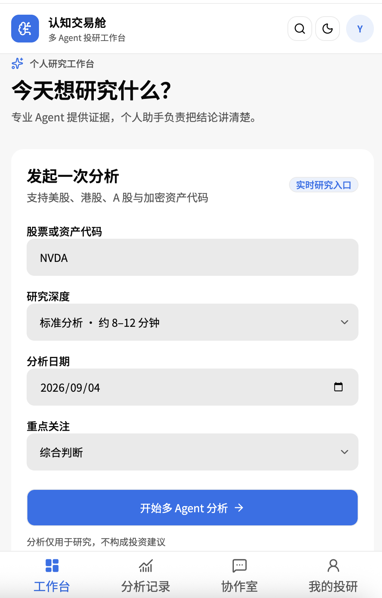
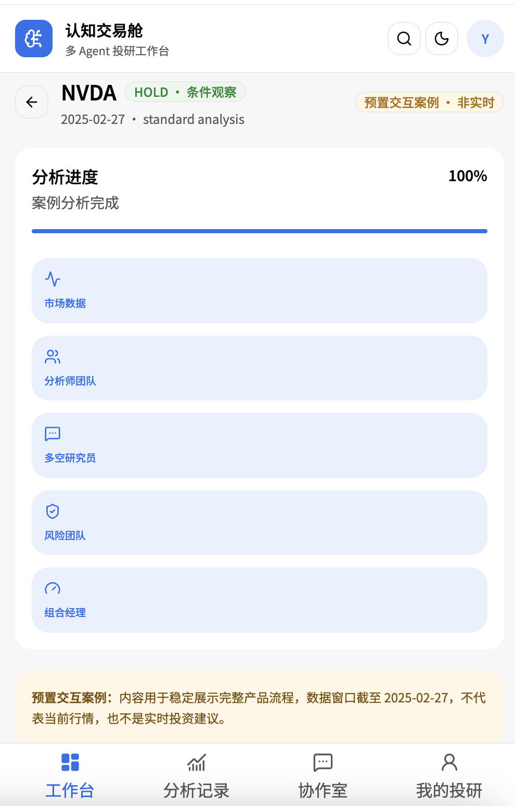
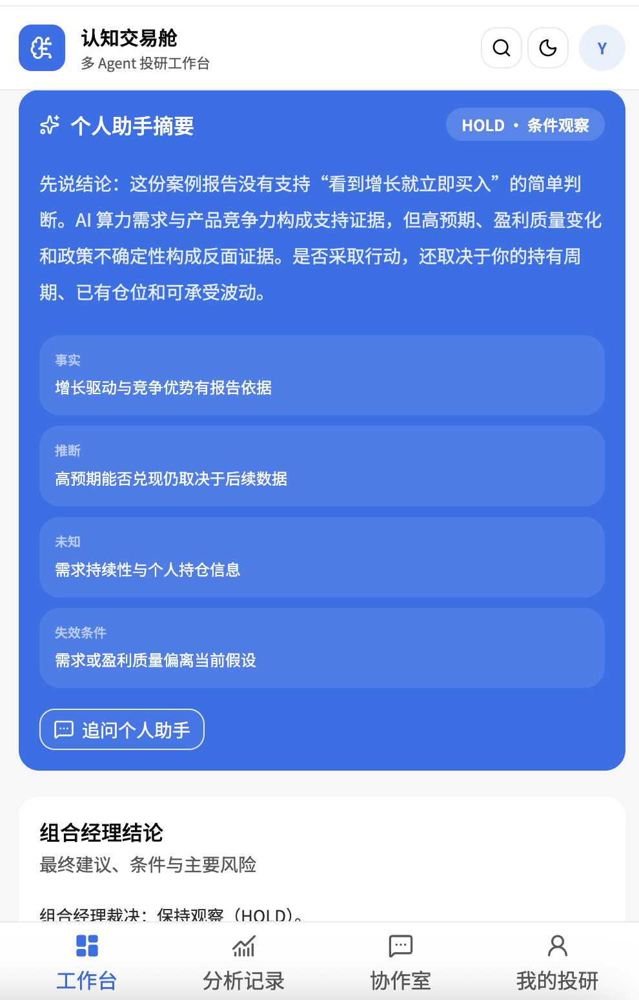
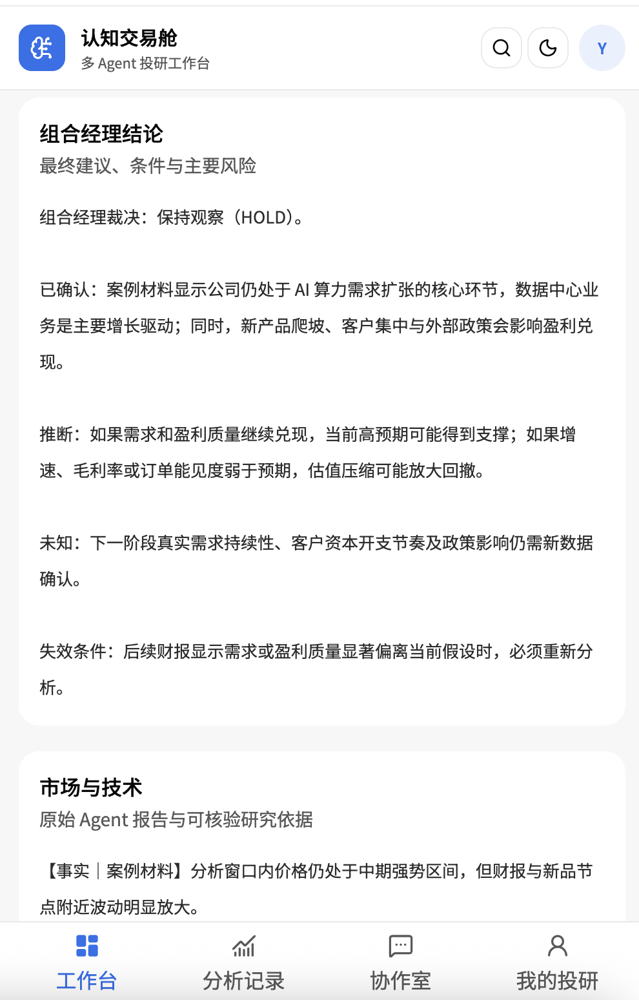
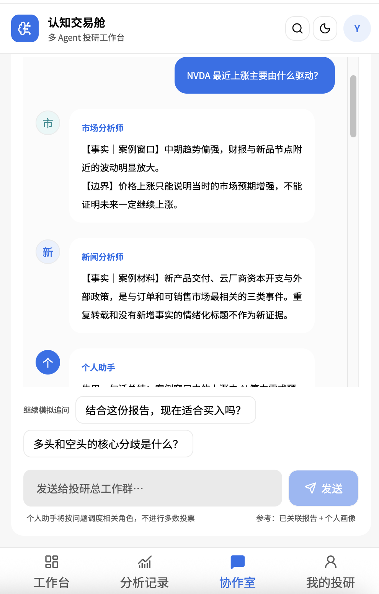
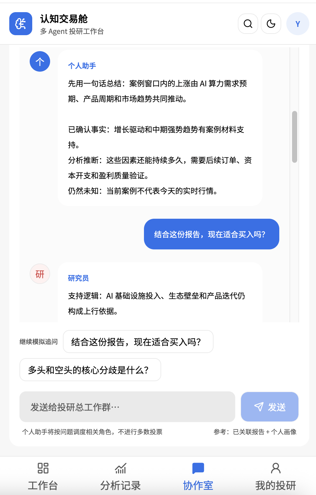
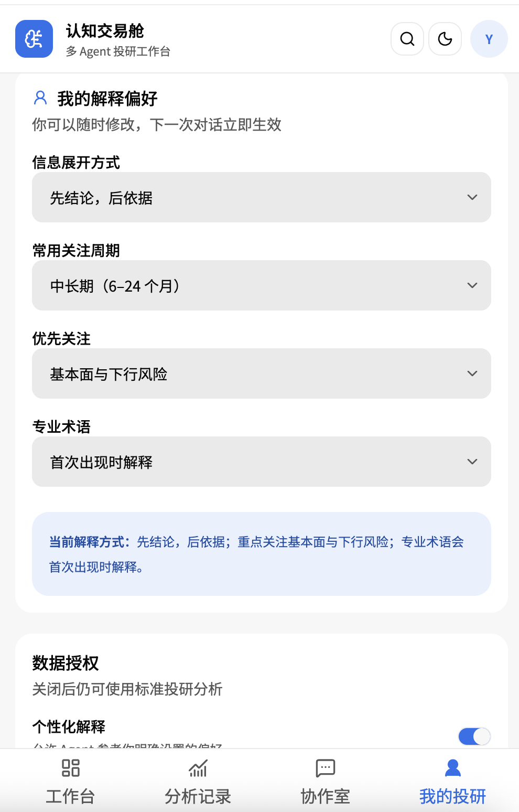

服务谁
关注 3–20 只股票、会主动研究，但缺乏行情、基本面、新闻与风险完整框架的普通自主投资者。
核心用户
高频持续需求
产品与交互方案说明
面向缺乏完整投研框架的普通自主投资者，TradingAgents 负责把碎片化市场信息压缩成专业报告；多视角协作室让相反证据同时可见；个人助手再用用户能理解的语言解释，但不替用户做交易决定。
01 / POSITIONING
产品位于资讯工具与交易决策之间，核心不是继续增加信息，而是帮助用户建立可复述、可质疑的判断。
关注 3–20 只股票、会主动研究，但缺乏行情、基本面、新闻与风险完整框架的普通自主投资者。
把“发生了什么、为什么重要、有哪些反证、何时失效”串成一条证据链，降低信息噪音与单一结论锚定。
不做资讯搬运、荐股机器人、收益承诺或自动交易系统；不以 Agent 数量投票，也不从浏览记录推断真实持仓与风险承受力。
02 / VIABILITY
需求成立来自题面观察；产品价值与安全性仍需用上线前指标验证，不能把方案假设写成已验证事实。
03 / INTERACTION PATH
点击左侧步骤查看责任与输出。主路径在“AI 自动处理”和“用户关键确认”之间交替，而不是把全部控制交给模型。
用户从 AI 自选股进入，或输入股票代码、分析日期与自然语言问题。系统展示将要分析的标的和数据窗口，避免跨标的或跨日期误用。
04 / PRODUCT SCREENS
页面不是彼此独立的功能集合：工作台定义任务，分析记录呈现 AI 的研究过程与依据，协作室帮助用户挑战结论，“我的投研”则把用户确认过的解释偏好带回下一次任务。
用户输入股票代码，并确认研究深度、分析日期和重点关注方向。点击“开始多 Agent 分析”才会创建新任务；AI 同时加载已经授权的自选股、浏览记录和画像上下文。

TradingAgents 自动完成多源数据调用、四类分析师并行研究、多空辩论、交易方案和风险裁决。用户无需逐步操作，但可以看到完成进度、数据窗口、个人助手摘要和原始角色报告。



用户可在总工作群询问“为什么涨”或“现在适合买入吗”。个人助手根据意图调度相关角色；所有回答仅检索当前标的、当前分析批次的报告。研究员呈现正反逻辑，风险分析师呈现三种情景，最后由个人助手整理边界。


用户可设置先结论还是先证据、常用关注周期、优先关注维度和专业术语偏好，并可关闭个性化解释与浏览记录授权。下一次对话读取这些设置，但专业报告仍由数据与证据决定。

05 / AGENT SYSTEM
本方案不额外包装独立“过滤器”。信息在专业分工、正反辩论、风险压力测试和最终裁决中逐层被筛选与压缩。
06 / HUMAN–AI
自动化负责降低操作成本；确认点负责避免隐私越界、数据误用与高风险决策被模型替代。
| 环节 | AI 自动完成 | 用户参与／确认 | 责任归属 |
|---|---|---|---|
| 任务进入 | 加载已授权的自选股、浏览记录与画像 | 确认股票代码与分析日期 | 人机协作 |
| 意图检查 | 识别问题类型与必要信息 | 买卖问题补充持仓、周期和风险边界 | 人机协作 |
| 专业研究 | 调用数据、并行分析、辩论、压力测试与报告检查 | 主动触发刷新；失败时选择重试或有限结论 | AI 执行 |
| 协作追问 | 检索同次报告、路由相关角色并生成差异化回答 | 选择总群或单聊，并继续追问 | 人机协作 |
| 可信总结 | 转译术语，汇总事实、推断、未知与失效条件 | 确认理解，纠正画像或补充个人信息 | 人机协作 |
| 现实行动 | 不下单、不保证收益、不替用户承担风险 | 决定是否继续研究或采取任何投资行动 | 用户决定 |
07 / TRUST LANGUAGE
每次专业回答都遵循统一协议；置信度表示证据支持程度，不是收益概率。
报告或数据已支持的内容，附数据时间、章节或证据编号，可回查来源。
从事实推出但尚未发生的判断，必须同时说明依赖的关键假设。
数据未披露、个人信息未确认或报告未覆盖的内容，不能用猜测补齐。
出现后必须重新评估的可观察信号，防止用户把旧结论长期固化。
08 / DEMO MOMENT
Demo 使用明确标注的 NVDA 预置交互案例，只用于稳定展示产品闭环，不代表当前行情或真实投资建议。
09 / GO–NO GO
以下为建议门槛，并非本次原型已经取得的实测成绩；完整方法与样本设计在评估方案中说明。
10 / BOUNDARY
“知道自己不知道什么”是产品可信度的一部分。接口失败或证据不足时，系统缩小结论，而不是补造完整答案。